# Paquetes anteriores
library(tidyverse)
library(sjPlot)
library(knitr) # para formatos de tablas
library(skimr)
library(DataExplorer)
library(GGally)
library(gridExtra)
library(ggpubr)
library(cvms)
library(kknn)
library(rpart.plot)
library(rda)
library(klaR)
library(ggord)
theme_set(theme_sjplot2())
# Paquetes AA
library(mlr3verse)
library(mlr3tuning)
library(mlr3tuningspaces)
library(mlr3cluster)
library(cluster)
library(ClusterR)
library(dbscan)
library(gbm)
library(RWeka)
library(xgboost)
library(lightgbm)
library(FactoMineR)
library(factoextra)
library(rsvd)
library(kernlab)
library(fastICA)18 Análisis cluster
Los modelos de agrupación o cluster hacen referencia a un amplio abanico de algoritmos cuya finalidad es encontrar patrones o grupos (clusters) dentro de un conjunto de muestras. Las particiones se establecen de forma que, las observaciones que están dentro de un mismo grupo, son similares entre ellas y distintas a las observaciones de otros grupos. Se trata de un método de aprendizaje no supervisado, ya que el proceso no tiene en cuenta a qué grupo pertenece realmente cada observación (si es que existe tal información). Esta característica es la que diferencia al clustering de los métodos de clasificación en los que se emplea la verdadera clasificación durante su entrenamiento.
Dada la utilidad del clustering en disciplinas muy distintas (genómica, marketing…), se han desarrollado multitud de variantes y adaptaciones de sus métodos y algoritmos. Podemos distinguir tres grupos:
Agrupación jerárquica: este tipo de algoritmos no requieren que el usuario especifique de antemano el número de grupos.
Agrupación partitiva: este tipo de algoritmos requieren que el usuario especifique de antemano el número de clusters que se van a crear.
Métodos combinados: algoritmos que combinan los dos grupos anteriores.
Todos los modelos de agrupación se basan en el establecimiento de una métrica de divergencia o similitud entre las muestras, a partir de la información contenida en las características de las predictoras consideradas, que es utilizada para construir las agrupaciones. Todo algoritmo de agrupación se organiza en cuatro etapas:
- Identificación del tipo de características (numéricas, categóricas, o lógicas)
- Elección de la métrica entre muestras.
- Elección del modelo de agrupación.
- Validación de los resultados.
Para facilitar la comprensión de los algoritmos, y dado que es lo más habitual, consideramos únicamente situaciones donde todas las características son de tipo numérico. De hecho, en muchas situaciones los modelos de agrupación se utilizan como complemento a otras técnicas de aprendizaje automático. Es muy habitual que con las puntuaciones obtenidas mediante un análisis de componentes principales o escalado multidimensional se proceda con un modelo de agrupación para establecer patrones de comportamiento.
En este tema veremos diferentes situaciones relacionadas con estos procedimientos.
18.1 Definición de métricas
Para proceder con cualquier proceso de agrupación es necesario establecer el concepto de métrica (divergencia o similitud) para un conjunto de muestras sobre las que se ha medido un conjunto de \(k\) características. El uso de un tipo de métrica u otro dependerá del tipo de características medidas sobre las muestras. En primer lugar definimos los conceptos de distancia y/o similitud y posteriormente veremos los tipos más habituales.
18.1.1 Distancia
Una función \(d\) se denomina distancia si para tres muestras \(x\), \(y\), \(z\) se verifica que:
- \(d(x,y) \geq 0\)
- \(d(x,y) = 0 \Leftrightarrow x=y\)
- \(d(x,y)=d(y,x)\)
- \(d(x,z) \leq d(x,y) + d(y,z)\)
Las métricas de distancia se utilizan principalmente para medir la cercanía o lejanía entre muestras que se han medido sobre características de tipo numérico.
18.1.1.1 Tipos de distancias
A continuación se presentan las medidas de distancia más habituales. En adelante consideramos dos muestras \(x=(x_1,...,x_k)\) e \(y=(y_1,...,y_k)\) medidas sobre \(k\) características.
Distancia euclídea o distancia l2. La distancia euclídea entre dos muestras se define como la longitud del segmento que une ambos puntos, es decir,
\[d(x,y) = \sqrt{\sum_{i=1}^k (x_i-y_i)^2}\]
Distancia de Minkowski. La distancia de Minkowski de orden \(q\) se define como
\[d(x,y) = \left(\sum_{i=1}^k |x_i-y_i|^q\right)^{1/q}\]
Distancia de Manhattan (ciudad) o distancia l1. La distancia de Manhattan se define como
\[d(x,y) = \sum_{i=1}^k |x_i-y_i|\]
Distancia de Tchebychev. La distancia de Tchebychev se define como
\[d(x,y) = \underset{i}{max} |x_i-y_i|\]
Distancia de Mahalanobis. La distancia de Mahalanobis se define como
\[d(x,y) = \sqrt{(x-y)^t S^{-1}(x-y)}, \] con \(S\) la matriz de varianzas-covarianzas entre \(x\) e \(y\).
Distancia correlación. Se define la distancia correlación, a partir de la correlación entre \(x\) e \(y\) (\(\rho_{xy}\)), como
\[d(x,y)=1-\rho_{xy}\] ### Similitud {#sec-180.1.2}
Una función \(s\) se denomina similitud si para tres muestras \(x\), \(y\), \(z\) y un valor real finito arbitrario \(s_0\) se verifica que:
- \(s(x,y) \leq s_0\)
- \(s(x,x) = s_0\)
- \(s(x,y) = s(y,x)\)
18.1.1.2 Tipos de similitudes
Las métricas de similitud se utilizan principalmente para establecer la cercanía o lejanía entre muestras que se han medido sobre características de tipo binario codificadas como 0-1. Dadas dos muestras de este tipo tenemos la tabla de asociación:
| x | 1 | 0 | Total |
|---|---|---|---|
| 1 | a | b | a+b |
| 0 | c | d | c+d |
| Total | a+c | b+d | t=a+b+c+d |
Coeficiente de adecuación simple (simple matching coefficient). El coeficiente de adecuación simple se define como
\[SMC = \frac{a+d}{m}\]
Índice de Jaccard. El índice de Jaccard se define como
\[J=\frac{a}{c+b+a}\]
18.2 Modelos de agrupación jerárquica
Este procedimiento intenta identificar grupos relativamente homogéneos de casos (o de variables) basándose en las características seleccionadas, mediante un algoritmo que comienza con cada caso (o cada variable) en un cluster diferente y combina los clusters hasta que sólo queda uno. Es posible analizar las variables brutas pero en el caso de variables de tipo numérico se suelen estandarizar.
Los pasos a seguir con este algoritmo son:
- Elegir distancia o similitud entre muestras y la elección del modelo de agrupación o distancia entre los diferentes clusters que se van formando.
- Calcular la distancia o similitud elegida entre cada par de muestras.
- Comenzar el proceso de agrupación utilizando el modelo de agrupación o de distancia entre grupos prefijado hasta que todas las muestras se encuentren en un único grupo o cluster.
En primer lugar se presentan los procesos de agrupación de clusters más habituales.
18.2.1 Distancias entre grupos
Aunque existe una gran variedad de definiciones de distancia entre grupos, aquí se presentan los más habituales. En adelante consideramos \(A\) y \(B\) dos grupos o clusters.
Vecino más cercano (Single linkage): se calcula la distancia entre todos los posibles pares formados por una observación del cluster A y una del cluster B. La menor de todas ellas se selecciona como la distancia entre los dos clusters. Se trata de la medida menos conservadora (minimal intercluster dissimilarity). Tenemos entonces que:
\[d(A,B) = \underset{i\in A;j\in B}{min} d(i,j)\]
Este modelo proporciona clusters más alargados.
Vecino más lejano (Complete linkage): se calcula la distancia entre todos los posibles pares formados por una observación del cluster A y una del cluster B. La menor de todas ellas se selecciona como la distancia entre los dos clusters. Se trata de la medida menos conservadora (minimal intercluster dissimilarity). Tenemos entonces que:
\[d(A,B) = \underset{i\in A;j\in B}{max} d(i,j)\]
Este modelo proporciona clusters más esféricos.
Promedio de grupo (Average linkage): se calcula la distancia entre todos los posibles pares formados por una observación del cluster A y una del cluster B. El valor promedio de todas ellas se selecciona como la distancia entre los dos clusters (mean intercluster dissimilarity). Si \(n_A\) y \(n_B\) son el número de muestras en los clusters \(A\) y \(B\) respectivamente, tenemos que:
\[d(A,B) = \frac{1}{n_a n_b}\sum_{i\in A;j\in B} d(i,j)\]
Este modelo proporciona clusters más robustos.
Centroide (Centroid linkage): se calcula el centroide de cada uno de los clusters y se selecciona la distancia entre ellos como la distancia entre los dos clusters. Si \(\bar{x}_A\) y \(\bar{x}_B\) son el vector promedio de las muestras en los clusters \(A\) y \(B\) respectivamente, tenemos que:
\[d(A,B) = d(\bar{x}_A,\bar{x}_B)\]
Este modelo proporciona clusters más robustos.
Ward (Ward linkage): se trata de un método general. La selección del par de clusters que se combinan en cada paso del agglomerative hierarchical clustering se basa en el valor óptimo de una función objetivo, pudiendo ser esta última cualquier función definida por el analista. El método Ward’s minimum variance es un caso particular en el que el objetivo es minimizar la suma total de varianza intracluster. En cada paso, se identifican aquellos 2 clusters cuya fusión conlleva menor incremento de la varianza total intracluster.
18.2.2 Análisis de la agrupación
En un modelo de cluster jerárquico se pueden llegar a soluciones muy diferentes debido a la elección de la distancia entre pares de muestras y la distancia entre grupos. Para analizar las posibles soluciones existen diferentes herramientas gráficas y númericas que pasamos a analizar.
18.2.2.1 Métodos gráficos
Los métodos gráficos habituales son el dendograma y el scree plot.
Dendograma
El dendograma (o árbol invertido) es un diagrama de árbol que se utiliza para representar de forma gráfica la estructura de los grupos que se forman al aplicar un algoritmo de agrupamiento jerárquico y sus niveles de similitud. Cuanto más próximos más similares serán. Se puede representar de forma ascendente o descendente, pero siempre contiene la misma información.
Su estructura consiste en un conjunto de ramas que se extienden desde un eje vertical y se ramifican hacia arriba. Los objetos se representan en las hojas de las ramas y los grupos en los nodos interiores de estas. La longitud de las ramas se utiliza para representar la distancia o similitud entre los objetos o grupos que conectan.

En el dendograma observamos la agrupación de los mamíferos según la dieta que siguen. Como hemos comentado anteriormente no indicamos a priori el número de grupos que se deben crear, por lo que dependerá del valor que escojamos.
Los grupos se representan mediante líneas horizontales y las alturas representan distancias, de manera que la altura a la que se unen dos grupos es la distancia entre ellos. Por ejemplo, foca y delfín (seal y dolphin) son diferentes del resto, formando un grupo propio que no se ha unido al resto de animales hasta el último paso. Si cortamos con una línea horizontal a la altura 20, podemos observar que se forman tres grupos muy claros.
Gráfico scree
El gráfico scree se utiliza habitualmente para determinar el número de clusters óptimo mediante la representación de la distancia de agrupación versus el número de clusters considerados. Se considera que el número óptimo de clusters se alcanza cuando la curva obtenida se estabiliza sobre cierto valor. Sin embargo, este procedimiento resulta muy costoso computacionalmente si el número de muestras con el que trabajamos es muy alto.
Podemos utilizar versiones de este gráfico con los criterios numéricos que vemos a continuación prefijando el número máximo de grupos a considerar.
18.2.2.2 Métodos numéricos
Como se analizó anteriormente, las tareas no supervisadas no tienen datos reales con los que comparar en la evaluación del modelo. Sin embargo, aún podemos medir la calidad de las asignaciones de conglomerados cuantificando qué tan estrechamente están relacionados los objetos dentro del mismo conglomerado (cohesión de conglomerados), así como qué tan distintos son los diferentes conglomerados entre sí (separación de conglomerados).
Dos medidas comunes son la medida de suma interna de cuadrados o suma de cuadrado intra grupos (WSS) y el coeficiente de silueta. WSS calcula la suma de diferencias al cuadrado entre observaciones y centroides, que es una cuantificación de la cohesión de los conglomerados (los valores más pequeños indican que los conglomerados son más compactos). El coeficiente de silueta cuantifica qué tan bien pertenece cada punto a su grupo asignado en comparación con los grupos vecinos, donde las puntuaciones más cercanas a 1 indican que están bien agrupados y las puntuaciones más cercanas a -1 indican que están mal agrupados.
18.3 Modelos de agrupación partitivos
Los algoritmos partitivos se diferencian principalmente de los modelos jerárquicos en que a priori se debe establecer el número de grupos (k) que se desean obtener. En muchas aplicaciones prácticas estos algoritmos de agrupación se utilizan como los modelos supervisados de clasificación.
Para comenzar con este tipo de algoritmos necesitamos especificar los centroides que califican los k centroides iniciales. Un centroide es un punto que identifica a un cluster o grupo. Generalmente, se trata de un conjunto de puntos, en el que cada uno representa a un grupo de los que se han formado. Los resultados finales que se obtengan dependerán de la forma en la que se seleccionen inicialmente estos centroides.
Lo más usual es elegir un conjunto aleatorio de k puntos y asignarlos como centroides y cada paso que avance el algoritmo irá mejorando la precisión. La elección de estos puede afectar al rendimiento del algoritmo pero nunca afectará a su convergencia. A continuación presentamos los modelos partitivos más habituales.
18.3.1 Algoritmo de k-medias
El algoritmo K-Means o K-Medias propuesto por Lloyd pretende partir un conjunto de N registros u observaciones en k grupos, de forma que su distancia al centroide de cada grupo sea mínima (o la similitud con respecto al centroide sea máxima). Los pasos del algoritmo son:
- Paso 1. Se seleccionan aleatoriamente
kcentroides (\(C_i, i = 1,...,k\)). - Paso 2. Se asigna cada uno de los restantes
Npuntos al centroide \(C_i\) más cercano, utilizando como criterio que un punto es asignado al grupo \(i\) si la distancia al cuadrado del cada punto al centroide \(C_i\) es la menor de todas las obtenidas con respecto al resto de centroides. - Paso 3. Recalcular los centroides a partir de los puntos asignados en cada uno de los grupos o cluster.
- Paso 4. Repetir los puntos 2 y 3 hasta que los grupos no cambien o se supere una tolerancia de usuario o un número máximo de iteraciones.
Podemos ver el funcionamiento del algoritmo mediante la imagen siguiente:

La principal dificultad con este algoritmo es el establecimiento del número de clusters. Por ese motivo se suele usar en conjunto de datos conde tenemos un target categórico que nos indica el número de grupos que debemos considerar.
18.3.2 Minibatch k-medias
El algoritmo de agrupación en clusters minibatch k-means es una versión del algoritmo estándar de k-medias que se puede usar en sustitución de este cuando se tratan grandes conjuntos de datos. Con el objetivo de reducir la dificultad computacional utiliza lotes o conjuntos de datos pequeños, aleatorios y de tamaño fijo para almacenarlos en la memoria y luego, con cada iteración, se recopila una muestra aleatoria de los datos y se usa para actualizar los clusters. A la vez que usa mini-lotes para reducir el tiempo de cálculo, intenta optimizar la función objetivo.
18.3.3 Algoritmo DBSCAN
Este es un algoritmo que se utiliza para identificar grupos (también conocidos como regiones densas), en los que no requiere que el usuario especifique el número de grupos a priori. Los grupos de puntos se asignan donde hay altas densidades y se calcula qué tan cercanos deben ser los puntos para que se consideren un miembro del grupo.
Para identificar los grupos de una base de datos usando DBSCAN, el algoritmo realiza los siguientes pasos:
- Selecciona un punto al azar del conjunto de datos y recupera todos los puntos dentro de una distancia
Epsilondesde ese punto. - Si el número de puntos recuperados en el paso 1 es mayor o igual a
MinPts, marca todos estos puntos como pertenecientes al mismo grupo y repite el proceso con la finalidad de identificar puntos adicionales que pertenecen al grupo. - Si por el contrario, el número de puntos recuperados en el paso 1 es inferior a
MinPts, el punto se marca como ruido. - Repite los pasos 1, 2 y 3 hasta que se hayan procesado todos los puntos del conjunto de datos.
Las instancias principales son aquellas que se encuentran en regiones densas. Todas las que estén en la vecindad de una instancia principal pertenecen al mismo grupo. Cualquier instancia que no sea una instancia central y no tenga una en su vecindad se considera una anomalía.
El algoritmo funciona bien si todos los clusters son lo suficientemente densos y si están bien separados por regiones de baja densidad. Es particularmente útil para encontrar grupos de forma arbitraria en grandes conjuntos de datos y es capaz de identificar grupos incluso en presencia de ruido o valores atípicos. Sin embargo, no es determinista y es sensible a la elección de Epsilon y MinPts. Estos parámetros deben elegirse cuidadosamente para obtener buenos resultados.
De esta forma el algoritmo DBSCAN permite identificar tres tipos de puntos:
- Punto núcleo (Core point): es aquel en el que al menos tiene minPts número de puntos (incluido el propio punto) en su región circundante dentro del radio eps.
- Punto frontera (Border point): es aquel en el que es alcanzable desde un punto núcleo y hay menos de minPts número de puntos dentro de su región circundante.
- Valor atípico (Outlier): no es un punto central ni es accesible desde ningún punto central.
En la imagen siguiente se muestra el funcionamiento del algoritmo para dos grupos y con minPts igual a cuatro.

18.3.4 Análisis de la agrupación
En todos los algoritmos partitivos el análisis de la agrupación obtenida se realiza con los mismos criterios que para los clusters jerárquicos.
18.4 Análisis cluster en R
Para llevar a cabo el análisis cluster vamos a utilizar diferentes modelos de aprendizaje que están definidos en mlr3. Son los más habituales pero hay muchos más definidos que pueden ser explorados en toro momento. Todos ellos se encuentran dentro de las librerías que hemos visto y en la mlr3cluster que cargaremos en este caso. En concreto nos centramos en los modelos:
clust.hclustpara cluster jerárquicos, cuyos parámetros principales sonmethodpara establecer el método de agrupación de los clusters, ydistmethodpara definir el tipo de distancia entre las muestras. Se pueden consultar las opciones disponibles en este enlace.clust.kmeanspara el algoritmo de k-medias cuyos parámetros principales soncentersque establece el número de clusters,iter.maxque fija el número de iteraciones del método, yalgorithmque establece el algoritmo utilizado en el proceso iterativo. Se pueden consultar las opciones disponibles en este enlace.clust.MBatchKMeanspara el algoritmo minibatch k-means, cuyos parámetros principales sonclusterspara identificar el número de clusters considerados,batch_sizepara fijar el tamaño de cada uno de los batch, ymax_itersque fija el número máximo de iteraciones del algoritmo. Este modelo utiliza la funciónMiniBatchKmeans()que se encuentra alojada en la libreríaClusterR. Se pueden consultar las opciones disponibles en este enlace.clust.dbscanpara el método dbscan, cuyos parámetros principales sonepspara la tolerancia, yminPtspara definir el número de puntos. Este modelo utiliza la funcióndbscan()que se encuentra alojada en la libreríadbscan. Se pueden consultar las opciones disponibles en este enlace.
A continuación cargamos todas las librerías necesarias para los análisis.
18.4.1 Bancos de datos
Para ejemplificar el uso de los modelos de cluster vamos a utilizar tres bancos de datos: Gene expression leukemia, Vehicle silhouettes, y Sales. Mostramos el uso de los modelos como herramienta individual y más tarde como acompañamiento de un modelo de componentes principales. A continuación presentamos los tres bancos de datos y la definición de la tarea de agrupación cada uno de ellos.
18.4.1.1 Gene expression leukemia
Este banco de datos lo hemos descrito en temas anteriores. Cargamos los datos, y generamos la tarea dejando fuera la característica que identifica el tipo de tumor.
# Leemos los datos
geneexpleu = read_rds("geneexpressionleukemia.rds")
# Eliminamos el indicador de la muestra
geneexpleu = geneexpleu %>% dplyr::select(-samples)
# Consideramos matriz de características y tipos
X_genes = geneexpleu %>% dplyr::select(-type)
y_genes = geneexpleu[,"type"]
# Debemos cambiar los nombres pq no se respeta la convención de R ya que todas ellas empiezan por un número
names(X_genes) = str_replace_all(names(X_genes),"[/_-]","")
names(X_genes) = paste("V", names(X_genes), sep="_")
# Definimos la tarea de cluster
tsk_genes = as_task_clust(X_genes)18.4.1.2 Vehicle silhouettes
Este conjunto de datos recoge información de cuatro tipos diferentes de vehículos, utilizando un conjunto de características extraídas de su silueta. Para el experimento se utilizaron cuatro vehículos modelo “Corgie”: un bus de dos pisos, una camioneta Cheverolet, un Saab 9000 y un Opel Manta 400. El objetivo del estudio es clasificar una silueta dada como uno de cuatro tipos diferentes de vehículos. Todos los atributos son numéricos discretos salvo la última variable que registra el tipo de vehículo. No existen valores perdidos.
18.4.1.3 Sales
Contiene las cantidades compradas semanalmente de 800 productos a lo largo de 52 semanas. Todos los atributos son numéricos sin valores perdidos y van identificados mediante W(número de la semana). En este caso no tenemos posible variable target.
18.4.2 Modelos de agrupación
En primer lugar comenzamos presentando los modelos de agrupación puros, es decir a partir de la variables originales, y en el punto siguiente veremos que ocurre cuando utilizamos los modelos de cluster como resultado del preprocesado mediante componentes principales. Cuando sea posible compararemos la solución del cluster con el target establecido en la base de datos.
18.4.2.1 Gene expression leukemia
Modelo de agrupación jerárquica
Comenzamos con el análisis de cluster jerárquico utilizando el método de Ward que proporciona buenas soluciones en muchas situaciones prácticas, y la distancia euclídea. En este caso consideramos todos los datos para el análisis. En primer lugar establecemos el modelo de aprendizaje, y lo entrenamos con todos los datos disponibles. Esto nos permitirá realizar los gráficos por defecto para estos modelos de aprendizaje con la función autoplot. En la tarea de preprocesamiento únicamente escalamos las variables para reducir la variabilidad original.
# Preprocesamiento
pp_genes =
po("scale", param_vals = list(center = TRUE, scale = TRUE))
# Modelo de aprendizaje
lrn1 = lrn("clust.hclust", method = "ward.D", distmethod = "euclidean")
genes_lrn1 = as_learner(pp_genes %>>% lrn1)
# Entrenamiento del modelo
genes_lrn1$train(tsk_genes)
# Valoración del modelo
pr1 = genes_lrn1$train(tsk_genes)$predict(tsk_genes)
# Valores de scores
pr1$score(msr("clust.silhouette"), task = tsk_genes)clust.silhouette
0.1256943 El valor del score es muy bajo indicando que el modelo establecido no parce muy adecuado. Obtenemos el dendograma y el gráfico scree asociado con el modelo obtenido.
En el dendograma obtenido se aprecian muchos grupos pero poco homogéneos. De hecho no queda muy clara cual sería la solución más correcta. Vamos a representar sobre el dendograma la solución con 5 grupos.
Una vez fijada una solución el siguiente paso es la caracterización de los clusters obtenidos a partir de las características consideradas para su construcción. Sin embargo, cuando el número de características es muy elevado resulta imposible dicha tarea. Por ese motivo se recurre a un análisis de reducción de la dimensión antes del análisis cluster, ya que entonces si resulta posible caracterizar los clusters obtenidos.
Otra opción como en este caso es comparar la solución cluster con el target original y analizar la matriz de confusión, para entender como se agrupan las muestras y si los grupos se corresponden con la información original. En este caso tomamos la solución con cinco clusters (ya que el target tenía cinco tipos de tumor) y comparamos los resultados.
# Modelo de aprendizaje
lrn1 = lrn("clust.hclust", method = "ward.D", distmethod = "euclidean", k = 5)
genes_lrn1 = as_learner(pp_genes %>>% lrn1)
# Valores de predicción
pr1 = genes_lrn1$train(tsk_genes)$predict(tsk_genes)
# Generamos la tabla de comparación
table(y_genes$type, pr1$partition)
1 2 3 4 5
AML 2 16 0 8 0
Bone_Marrow 0 0 10 0 0
Bone_Marrow_CD34 7 1 0 0 0
PB 0 0 0 0 10
PBSC_CD34 10 0 0 0 0Podemos ver como los clusters 2 a 4 se caracterizan por contener sujetos con un tipo de leucemia específica, mientras que el cluster es una combinación de varios de ellos. Podríamos establecer la equivalencia:
- Cluster 1: PBSC_CD34
- Cluster 2: AML
- Cluster 3: Bone_Marrow
- Cluster 4: AML
- Cluster 5: PB
No queda claro donde agregar el tipo Bone_Marrow_CD34, y aparecen dos grupos con tumores AML mayoritariamente. No parece que la solución obtenida permita clasificar adecuadamente los tipos de tumor, y queda claro que el tipo AML es el más difícil de aislar de forma independiente.
Modelo de k-medias
Utilizamos ahora el algoritmo de k-medias fijando k igual a 5, el número de grupos que deseamos encontrar, para que coincida con el número de niveles del target. Definimos el modelo de aprendizaje, utilizando el mismo preprocesado que con el algoritmo anterior:
Podemos analizar la solución obtenida identificando el cluster al que es asignado cada elemento de la muestra y comparando lo resultados con los datos originales.
[1] 3 3 3 3 3 3 1 3 3 3 3 3 3 3 3 3 3 3 2 4 3 1 1 1 3 4 1 1 3 3 2 1 1 1 3 1 1 1
[39] 4 2 4 1 1 2 5 5 5 5 5 5 5 5 5 5 2 2 2 2 2 2 2 2 2 2[1] 14 14 22 4 10Veamos ahora como se corresponde la clasificación del algoritmo con los valores originales:
# Generamos la tabla de comparación
table(y_genes$type, genes_lrn1$model$clust.kmeans$model$cluster)
1 2 3 4 5
AML 13 4 5 4 0
Bone_Marrow 0 0 10 0 0
Bone_Marrow_CD34 1 0 7 0 0
PB 0 0 0 0 10
PBSC_CD34 0 10 0 0 0El modelo se comporta de forma similar la jerárquico, incluso empeora la asignación a los grupos. Para verificar el mal comportamiento podemos valorar los scores asociados a este modelo:
# Predicción para cada modelo
pr1 = genes_lrn1$train(tsk_genes)$predict(tsk_genes)
# Valores de scores
pr1$score(msr("clust.silhouette"), task = tsk_genes)clust.silhouette
0.1994495 El resultado obtenido mejora los del modelo jerárquico a pesar de que la clasificación obtenida es menos clara. En este caso tenemos dos posibilidades de mejora. La primera consiste en determinar el número óptimo de grupos a considerar mediante una búsqueda automática, mientras que la segunda pasa por realizar el algoritmo de k-medias después del preprocesado mediante componentes principales. Esta segunda la exploraremos un poco más adelante en este mismo tema.
18.4.2.2 Vehicle silhouettes
Realizamos ahora el análisis para el banco de datos de vehículos.
Modelo de agrupación jerárquica
De nuevo utilizamos el método de Ward para obtener la solución jerárquica. De nuevo escalamos los valores de las características
# Preprocesamiento
pp_vehicle =
po("scale", param_vals = list(center = TRUE, scale = TRUE))
# Modelo de aprendizaje
lrn1 = lrn("clust.hclust", method = "ward.D", distmethod = "euclidean")
vehicle_lrn1 = as_learner(pp_vehicle %>>% lrn1)
# Entrenamiento del modelo
vehicle_lrn1$train(tsk_vehicle)
# Valoración del modelo
pr1 = vehicle_lrn1$train(tsk_vehicle)$predict(tsk_vehicle)
pr1$score(msr("clust.silhouette"), task = tsk_vehicle)clust.silhouette
0.641126 El score es bastante alto mostrando que el modelo de cluster obtenido parece bastante adecuado. Veamos el dendograma correspondiente:
Parecen apreciarse claramente una solución con tres grupos, pero para poder realizar las comparaciones necesarias con el target original, optamos por una solución con cuatro grupos que representamos gráficamente.
A la vista del dendograma una solución con 4 grupos parece bastante buena para definir grupos homogéneos. Comparamos la solución del modelo con el target original.
# Modelo de aprendizaje
lrn1 = lrn("clust.hclust", method = "ward.D", distmethod = "euclidean", k = 4)
vehicle_lrn1 = as_learner(pp_vehicle %>>% lrn1)
# Valores de predicción
pr1 = vehicle_lrn1$train(tsk_vehicle)$predict(tsk_vehicle)
# Generamos la tabla de comparación
table(y_vehicle, pr1$partition)
y_vehicle 1 2 3 4
bus 93 25 58 42
opel 41 78 53 40
saab 40 75 59 43
van 112 0 81 6La solución obtenida es bastante mala porque no resulta posible identificar cada grupo con un tipo de vehículo ya que los datos están muy repartidos. Esto puede ser debido a que las variables no poseen suficiente información para clasificar las observaciones o que las utilizarlas directamente las distancia obtenidas no nos permiten realizar agrupaciones adecuadas. Como en el ejemplo anterior un preprocesado mediante CP podría resolver en parte este problema. Veamos que ocurre si utilizamos el algoritmo de k-medias.
Modelo de k-medias
Utilizamos ahora el algoritmo de k-medias fijando k igual a 4.
Identificamos clusters y comparamos los resultados con los datos originales.
[1] 2 2 1 2 3 1 2 2 2 2 2 2 2 2 2 1 4 2 1 1 4 4 2 2 1 2 4 1 1 4 2 2 2 1 2 2 4
[38] 3 1 4 1 4 4 2 1 4 4 4 4 2 4 2 1 2 1 2 2 4 1 4 1 4 4 4 2 4 4 1 2 1 1 1 2 4
[75] 2 1 2 4 1 4 4 1 2 4 2 1 2 4 2 4 1 2 1 2 4 1 4 4 1 4 3 2 2 4 1 1 1 4 4 1 2
[112] 2 4 4 4 2 1 1 4 2 4 4 2 4 4 4 4 4 2 1 1 2 2 4 1 3 4 2 4 2 2 4 1 4 2 1 2 2
[149] 2 2 1 2 2 1 2 1 2 4 2 2 4 1 2 2 1 1 2 1 4 4 1 1 2 1 2 2 2 2 2 4 1 4 2 4 1
[186] 2 2 2 1 2 1 2 2 1 2 4 1 4 4 4 2 2 1 1 2 2 2 4 4 1 2 2 2 1 4 2 4 1 4 2 1 4
[223] 1 4 4 2 1 2 1 4 4 4 4 1 2 4 2 4 1 4 2 2 4 1 4 4 2 2 1 4 4 1 4 2 2 1 2 2 1
[260] 1 4 2 2 2 1 4 4 2 2 4 4 2 2 2 1 2 4 4 1 2 2 4 4 1 4 2 2 4 1 4 2 3 2 2 1 2
[297] 1 4 2 2 1 2 2 2 4 2 1 1 1 1 1 4 2 1 4 4 4 2 4 1 1 1 4 1 2 4 1 2 2 2 2 1 1
[334] 4 1 1 4 1 2 2 2 4 4 1 1 1 1 2 2 2 1 4 2 4 1 2 2 1 2 1 1 1 2 2 4 1 4 4 4 2
[371] 2 2 2 2 4 1 1 4 4 1 4 1 4 1 2 4 2 4 3 1 4 2 2 2 1 2 1 2 2 2 1 2 1 2 1 2 4
[408] 4 2 2 2 4 4 2 4 1 2 2 4 2 4 1 2 4 2 2 1 2 1 2 1 1 4 4 1 2 4 4 2 1 1 4 2 1
[445] 1 4 1 1 1 2 2 2 2 2 1 4 4 2 1 2 2 1 2 4 1 4 4 1 1 2 4 1 1 1 4 1 1 4 2 4 1
[482] 1 2 2 4 4 1 2 4 1 1 2 4 1 1 2 1 4 4 1 1 1 4 4 1 1 1 2 2 1 4 2 1 2 4 4 2 1
[519] 4 2 2 4 2 3 1 2 1 1 2 4 2 1 1 4 4 2 1 2 1 1 2 2 2 2 4 4 4 2 2 1 4 4 2 4 1
[556] 2 1 4 4 1 1 2 1 2 2 2 1 2 4 2 1 2 2 4 1 1 1 1 2 4 4 4 1 1 1 2 1 4 2 1 4 4
[593] 4 2 4 1 2 2 2 2 2 2 1 2 2 1 2 2 2 4 1 4 4 2 4 2 2 4 4 1 1 4 2 1 2 1 2 2 1
[630] 2 4 1 4 1 4 4 2 4 2 1 1 4 1 2 2 4 2 4 1 2 1 4 2 2 2 4 4 4 2 1 2 1 4 2 2 2
[667] 2 1 2 4 1 2 1 2 2 1 4 1 4 2 2 2 4 1 2 4 2 1 4 1 2 2 1 4 2 4 2 2 4 2 1 1 2
[704] 2 1 1 3 2 4 2 1 1 1 1 2 1 2 2 1 1 2 1 2 1 2 4 1 2 4 1 1 1 2 1 4 4 1 1 1 2
[741] 1 2 2 1 2 4 2 4 2 1 2 4 2 2 2 4 1 4 4 4 1 1 4 1 1 4 2 2 1 2 4 1 1 4 2 2 1
[778] 1 1 4 1 2 1 1 4 4 1 4 1 2 4 2 1 1 2 4 2 1 1 2 2 4 2 2 1 4 2 1 4 4 1 4 2 4
[815] 4 4 2 1 1 2 4 1 2 1 1 4 2 1 4 4 2 2 1 4 4 1 4 2 2 2 2 2 2 1 2 4[1] 268 324 8 246Veamos ahora como se corresponde la clasificación del algoritmo con los valores originales:
y_vehicle 1 2 3 4
bus 50 80 2 86
opel 112 65 0 35
saab 106 73 0 38
van 0 106 6 87La agrupación es similar e incluso un poco peor que la del modelo jerárquico como podemos comprobar al analizar el score correspondiente.
# Predicción para cada modelo
pr1 = vehicle_lrn1$train(tsk_vehicle)$predict(tsk_vehicle)
# Valores de scores
pr1$score(msr("clust.silhouette"), task = tsk_vehicle)clust.silhouette
0.2467293 El resultado con el algoritmo de k-medias es muy inferior al del modelo jerárquico, o que nos haría decantarnos por este último para este banco de datos.
18.4.2.3 Sales
Finalizamos estos primeros modelos con el banco de datos de ventas. Procedemos de la misma forma que en ejemplos anteriores salvo por el hecho de que ahora no tenemos target y no podemos comparar nuestros resultados.
Modelo de agrupación jerárquica
De nuevo utilizamos el método de Ward para obtener la solución jerárquica y escalamos los valores de las características.
# Preprocesamiento
pp_sales =
po("scale", param_vals = list(center = TRUE, scale = TRUE))
# Modelo de aprendizaje
lrn1 = lrn("clust.hclust", method = "ward.D", distmethod = "euclidean")
sales_lrn1 = as_learner(pp_sales %>>% lrn1)
# Entrenamiento del modelo
sales_lrn1$train(tsk_sales)
# Valoración del modelo
pr1 = sales_lrn1$train(tsk_sales)$predict(tsk_sales)
pr1$score(msr("clust.silhouette"), task = tsk_sales)clust.silhouette
0.7478163 El coeficientes es bastante alto indicando que el modelo es capaz de establecer grupos más o menos homogéneos. Veamos el dendograma correspondiente.
En este caso se podría optar por una solución con tres o cuatro clusters. En este caso vamos a seleccionar la solución con cuatro grupos.
A la vista del dendograma una solución con 4 grupos parece bastante buena para definir grupos homogéneos. En este caso vamos a caracterizar los grupos en función de las ventas realizadas en cada una de las semanas. para ellos añadiremos el grupo de pertenencia de cada muestra la banco de datos original, y realizaremos un estudio descriptivo y gráfico de ellos.
# Modelo de aprendizaje
lrn1 = lrn("clust.hclust", method = "ward.D", distmethod = "euclidean", k = 4)
sales_lrn1 = as_learner(pp_sales %>>% lrn1)
# Valores de predicción
pr1 = sales_lrn1$train(tsk_sales)$predict(tsk_sales)
# Añadimos columna de asignación (en formato factor) a matriz de datos de ventas
X_sales$grupo = as.factor(pr1$partition)Una vez tenemos el dataframe con los datos originales y el grupo asignado calculamos las medias de cada variable para cada uno de los grupos:
# A tibble: 4 × 53
grupo W0 W1 W2 W3 W4 W5 W6 W7 W8 W9
<fct> <dbl> <dbl> <dbl> <dbl> <dbl> <dbl> <dbl> <dbl> <dbl> <dbl>
1 1 12.2 12.0 12.2 12.4 12.6 12.8 12.6 12.4 12.7 12.7
2 2 3.25 3.48 3.42 3.61 3.61 3.58 3.71 3.99 3.55 3.72
3 3 34.0 35.6 37.1 38.6 37.2 36.3 38.0 37.1 38.6 37.5
4 4 0.231 0.221 0.217 0.221 0.298 0.251 0.281 0.221 0.234 0.258
# ℹ 42 more variables: W10 <dbl>, W11 <dbl>, W12 <dbl>, W13 <dbl>, W14 <dbl>,
# W15 <dbl>, W16 <dbl>, W17 <dbl>, W18 <dbl>, W19 <dbl>, W20 <dbl>,
# W21 <dbl>, W22 <dbl>, W23 <dbl>, W24 <dbl>, W25 <dbl>, W26 <dbl>,
# W27 <dbl>, W28 <dbl>, W29 <dbl>, W30 <dbl>, W31 <dbl>, W32 <dbl>,
# W33 <dbl>, W34 <dbl>, W35 <dbl>, W36 <dbl>, W37 <dbl>, W38 <dbl>,
# W39 <dbl>, W40 <dbl>, W41 <dbl>, W42 <dbl>, W43 <dbl>, W44 <dbl>,
# W45 <dbl>, W46 <dbl>, W47 <dbl>, W48 <dbl>, W49 <dbl>, W50 <dbl>, …El problema es que a tabla es demasiado grande y por tanto resulta difícil extraer conclusiones. Recolocamos los datos para poder representarlos gráficamente. Hacemos uso de la función pivot_longer que nos permite reestructurar los datos en un formato que la función gráfica puede interpretar fácilmente. Para utilizar esta función debemos identificar los nombres de las variables que deseamos reorganizar.
# Reorganizamos los datos para tener solo tres columnas: grupo, semana, y ventas
df = resumen %>% pivot_longer(cols = colnames(resumen[,2:ncol(resumen)]), names_to = "W", values_to = "Sales")
ggplot(df, aes(W, Sales, col = grupo)) + geom_point()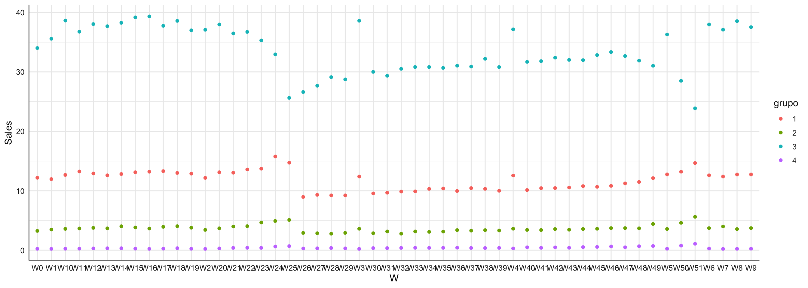
El gráfico de medias nos permite identificar claramente las características de cada uno de los grupos. Por ejemplo, el grupo 3 viene caracterizado por las mayores ventas en todas las semanas, mientras que el cuatro contiene las ventas semanales más bajas. En este caso no establecemos el algoritmo de k-medias ya que no tenemos información suficiente para establecer el número de clusters inicial. Podríamos plantear soluciones para diferentes valores de k y seleccionar aquel con el mejor score.
Una vez hemos visto los modelos de cluster aplicados directamente sobre los bancos de datos originales, vamos a ver como utilizar el algoritmo de componentes principales para refinar nuestras agrupaciones y conseguir soluciones más eficientes y que nos permitan caracterizar los datos de forma más precisa.
18.4.3 Modelos de agrupación con CP
Comenzaremos todos los análisis determinado el número óptimo de componentes. A continuación extraeremos las coordenadas de todas las muestras en dichas componentes y procederemos con el análisis cluster. Como criterio valoraremos el número de componentes de las soluciones donde alcanzamos el 50%, 70%, y 80% de variabilidad explicada. Una vez establecido dicho número utilizaremos el pipeop pca para realizar el preprocesado de datos mediante componentes principales.
18.4.3.1 Gene expression leukemia
Comenzamos con el análisis de CP y la selección del número de componentes.
# CP
leukemia_cp = prcomp(X_genes, scale = TRUE)
# Resumen numérico del análisis
resumen_cp = get_eigenvalue(leukemia_cp)
# Componentes para el 50% de VE
sum(resumen_cp$cumulative.variance.percent <= 50) + 1[1] 5[1] 13[1] 22En este caso hay una gran diferencia en el número de componentes entre todas soluciones, aunque dado el gran número de variables originales (22283) es hasta cierto punto el comportamiento esperado. Para ver la potencia del análisis empezamos con la solución con cuatro componentes. Analizamos únicamente la solución del modelo jerárquico.
Establecemos el modelo de aprendizaje utilizando el preprocesado adecuado, y obtenemos el score correspondiente para comparar con el modelo sin preprocesado de CP:
# Preprocesado
pp_genes =
po("pca", param_vals = list(center = TRUE, scale. = TRUE, rank. = 5))
# Modelo de aprendizaje
lrn1 = lrn("clust.hclust", method = "ward.D", distmethod = "euclidean")
genes_lrn1 = as_learner(pp_genes %>>% lrn1)
# Entrenamiento del modelo
genes_lrn1$train(tsk_genes)
# Valoración del modelo
pr1 = genes_lrn1$train(tsk_genes)$predict(tsk_genes)
# Valores de scores
pr1$score(msr("clust.silhouette"), task = tsk_genes)clust.silhouette
0.1256943 El score ha mejorado algo con respecto al modelo sin CP pero todavía resulta muy bajo. Veamos que ocurre si cambiamos la solución con 13 componentes.
# Preprocesado
pp_genes =
po("pca", param_vals = list(center = TRUE, scale. = TRUE, rank. = 13))
# Modelo de aprendizaje
lrn1 = lrn("clust.hclust", method = "ward.D", distmethod = "euclidean")
genes_lrn1 = as_learner(pp_genes %>>% lrn1)
# Entrenamiento del modelo
genes_lrn1$train(tsk_genes)
# Valoración del modelo
pr1 = genes_lrn1$train(tsk_genes)$predict(tsk_genes)
# Valores de scores
pr1$score(msr("clust.silhouette"), task = tsk_genes)clust.silhouette
0.1205582 El coeficiente empeora el resultado anterior. Veamos que ocurre en el último caso:
# Preprocesado
pp_genes =
po("pca", param_vals = list(center = TRUE, scale. = TRUE, rank. = 22))
# Modelo de aprendizaje
lrn1 = lrn("clust.hclust", method = "ward.D", distmethod = "euclidean")
genes_lrn1 = as_learner(pp_genes %>>% lrn1)
# Entrenamiento del modelo
genes_lrn1$train(tsk_genes)
# Valoración del modelo
pr1 = genes_lrn1$train(tsk_genes)$predict(tsk_genes)
# Valores de scores
pr1$score(msr("clust.silhouette"), task = tsk_genes)clust.silhouette
0.1256943 A la vista de los resultados parece que una solución con cinco componentes es suficiente. En primer lugar vemos el dendograma correspondiente:
# Preprocesado
pp_genes =
po("pca", param_vals = list(center = TRUE, scale. = TRUE, rank. = 5))
# Modelo de aprendizaje
lrn1 = lrn("clust.hclust", method = "ward.D", distmethod = "euclidean")
genes_lrn1 = as_learner(pp_genes %>>% lrn1)
# Entrenamiento del modelo
genes_lrn1$train(tsk_genes)
# Dendograma
modelo = genes_lrn1$model$clust.hclust$model
plot(as.dendrogram(modelo))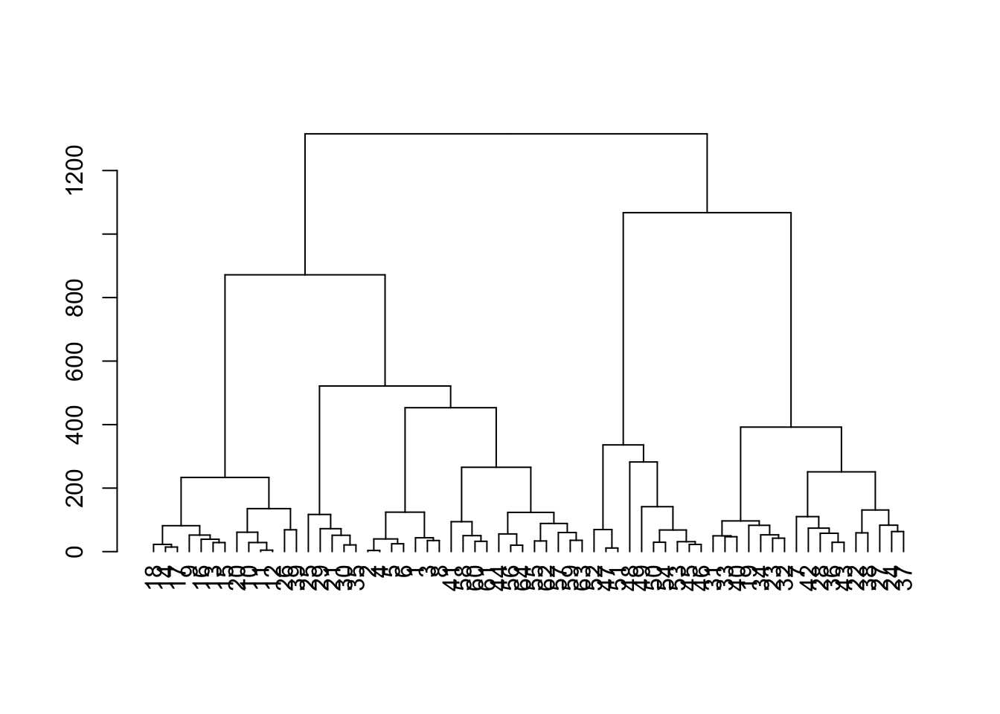
En este caso no queda clara que una solución con cinco clusters parece acertada, a pesar de que el target tiene cinco grupos. Veamos como se corresponden los clusters obtenidos con dicha variable. Planteamos cinco grupos para mantener la equivalencia con el target original.
# Modelo de aprendizaje
lrn1 = lrn("clust.hclust", method = "ward.D", distmethod = "euclidean", k = 5)
genes_lrn1 = as_learner(pp_genes %>>% lrn1)
# Valores de predicción
pr1 = genes_lrn1$train(tsk_genes)$predict(tsk_genes)
# Generamos la tabla de comparación
table(y_genes$type, pr1$partition)
1 2 3 4 5
AML 2 16 3 5 0
Bone_Marrow 0 0 10 0 0
Bone_Marrow_CD34 7 1 0 0 0
PB 0 0 0 0 10
PBSC_CD34 10 0 0 0 0En este caso si ocurre que algunos cluster identifican mayoritariamente cada tipo de tumor. El más problemático es el cluster 1 con los tipos AML, Bone_Marrow_CD34, y PBSC_CD34. Vista la agrupación obtenida la caracterización de los clusters que nos puede aportar información muy relevante sobre las características de cada tipo de tumor. Extraemos las coordenadas en las 5 componentes y las unimos con la solución obtenida.
# Obtención de coordenadas
leukemia_cp = prcomp(X_genes, scale = TRUE)
coor_cp = as.data.frame(get_pca_ind(leukemia_cp)$coord[,1:5])
# Fusión de datos
coor_cp$cluster = as.factor(pr1$partition)
colnames(coor_cp)[1:5] = c("D01", "D02","D03","D04","D05")
# Gráfico descriptivo de componentes
df = coor_cp %>% pivot_longer(cols = colnames(coor_cp[,1:(ncol(coor_cp)-1)]), names_to = "CP", values_to = "Coordenadas")
ggplot(df, aes(cluster, Coordenadas)) +
geom_boxplot() +
facet_wrap(vars(CP), nrow = 2)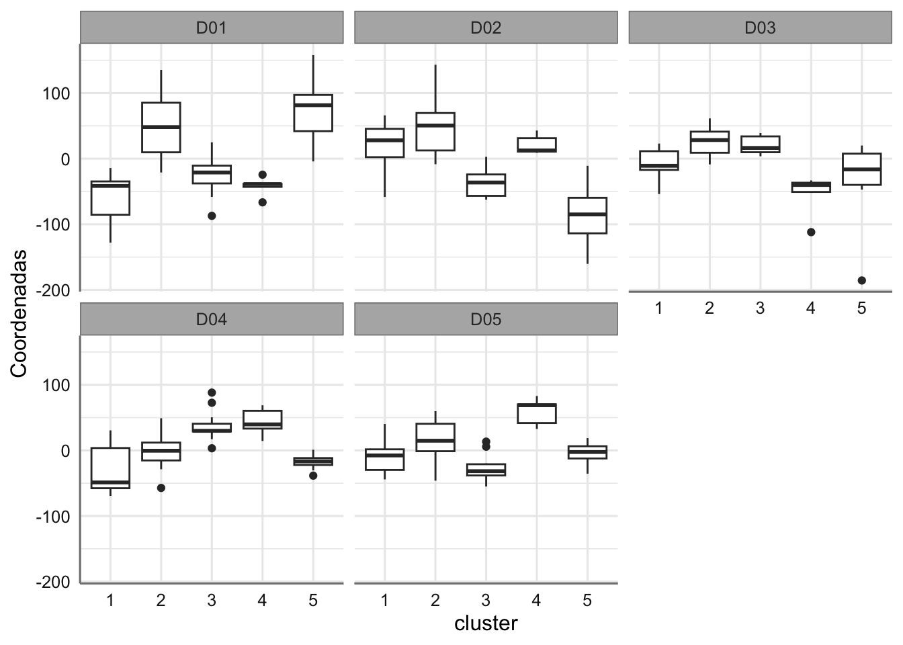
Como era de esperar, por la misma construcción de las componentes, las mayores diferencias entre los clusters se observan en las primera dimensiones. Por ejemplo, en la primera componente podemos establecer el orden siguiente en función de los valores observados (en orden descendente): C5 > C2 > C3 > C4 > C1, lo que implica teniendo en cuenta la tabla de coincidencias entre clasificación y valores originales, que las leucemias del tipo PB se pueden identificar si buscamos los valores más altos en la primera componente. Por otro lado los valores más bajos en dicha componente se pueden asociar con las leucemias de los tipos PBSC_CD34, AML, y Bone_Marrow_CD34. Así mismo podemos ver que los valores más bajos en la componente 2 se corresponden con el grupo 5 (PB), y los más altos con los grupos 1 y 2 (AML, Bone_Marrow_CD34). Veamos estas conclusiones de forma gráfica:
# Añadimos el tipo de leucemia a las coordenadas y el cluster.
coor_cp$type = y_genes$type
# Gráfico
ggplot(coor_cp, aes(D01, D02, color = cluster, shape = type)) +
geom_point(size = 3) 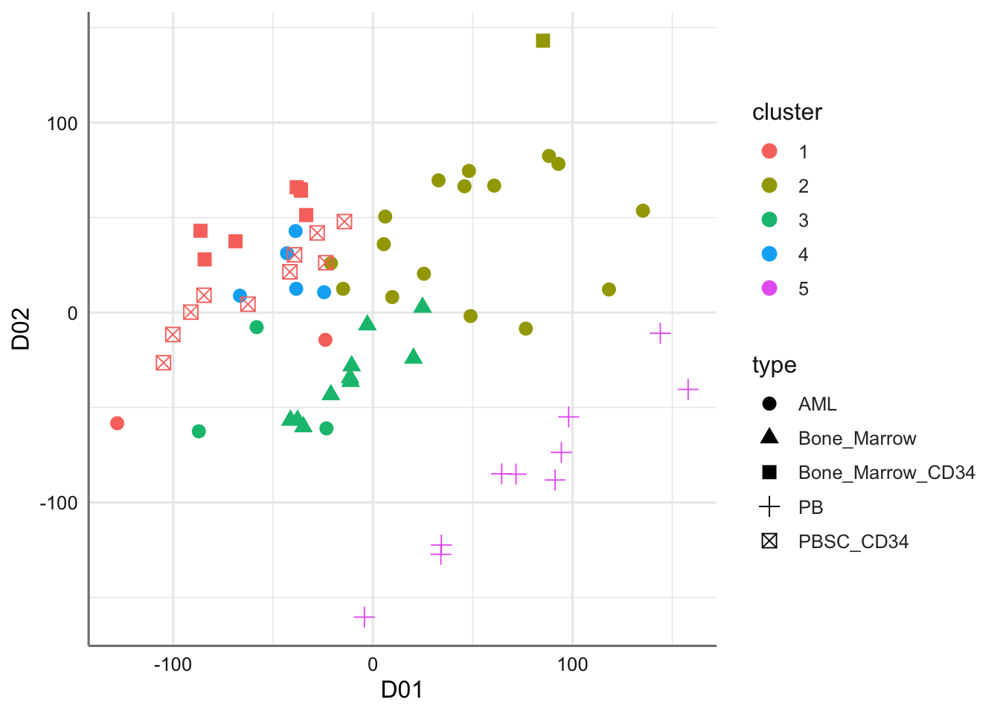
En el gráfico se observa claramente que el cluster 5 esta asociado con PB y se sitúa sobre el cuadrante IV. En los otros cuatro grupos hay mezclas de diferentes tipos de leucemia, aunque geográficamente si se aprecia cierta separación entre los diferentes cluster.
18.4.3.2 Vehicle silhouettes
Comenzamos con el análisis de CP y la selección del número de componentes.
# CP
vehicle_cp = prcomp(X_vehicle, scale = TRUE)
# Resumen numérico del análisis
resumen_cp = get_eigenvalue(vehicle_cp)
# Componentes para el 50% de VE
sum(resumen_cp$cumulative.variance.percent <= 50) + 1[1] 1[1] 3[1] 4En este caso seleccionamos cuatro componentes ya que no añadimos mucha complejidad (muchas componentes) pero si ganamos un 10% de variabilidad explicada.
Establecemos el modelo de aprendizaje utilizando el preprocesado adecuado, y obtenemos el score correspondiente para comparar con el modelo sin preprocesado de CP:
# Preprocesado
pp_vehicle =
po("pca", param_vals = list(center = TRUE, scale. = TRUE, rank. = 4))
# Modelo de aprendizaje
lrn1 = lrn("clust.hclust", method = "ward.D", distmethod = "euclidean")
vehicle_lrn1 = as_learner(pp_vehicle %>>% lrn1)
# Entrenamiento del modelo
vehicle_lrn1$train(tsk_vehicle)
# Valoración del modelo
pr1 = vehicle_lrn1$train(tsk_vehicle)$predict(tsk_vehicle)
# Valores de scores
pr1$score(msr("clust.silhouette"), task = tsk_vehicle)clust.silhouette
0.6651938 El valor obtenido del índice es superior al del modelo jerárquico original. Veamos el dendograma asociado:
# Preprocesado
pp_genes =
po("pca", param_vals = list(center = TRUE, scale. = TRUE, rank. = 4))
# Modelo de aprendizaje
lrn1 = lrn("clust.hclust", method = "ward.D", distmethod = "euclidean")
vehicle_lrn1 = as_learner(pp_vehicle %>>% lrn1)
# Entrenamiento del modelo
vehicle_lrn1$train(tsk_vehicle)
# Dendograma
modelo = vehicle_lrn1$model$clust.hclust$model
plot(as.dendrogram(modelo))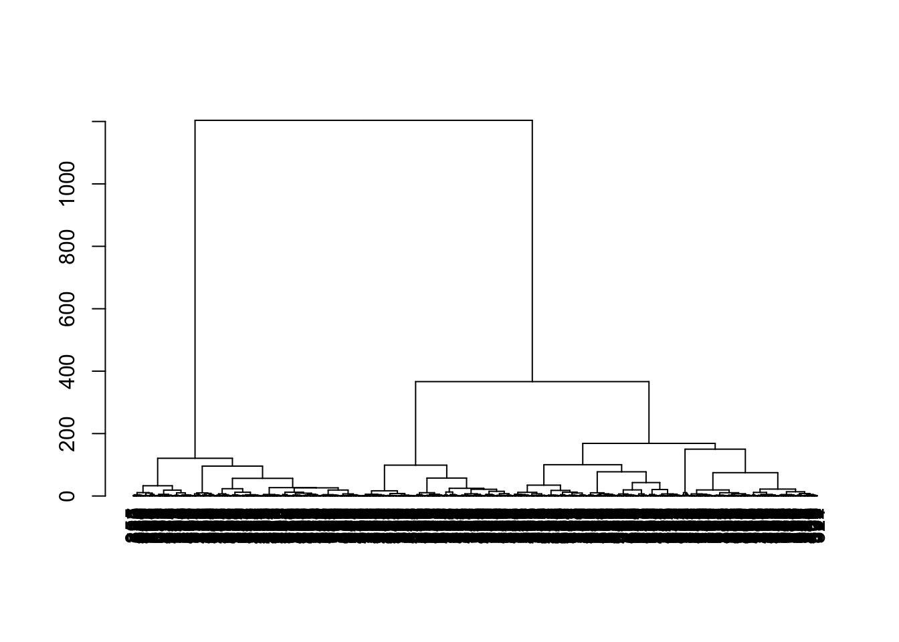
Como en el caso anterior vamos a mantener la solución con cuatro clusters para poder comparar la solución con el target original.
# Modelo de aprendizaje
lrn1 = lrn("clust.hclust", method = "ward.D", distmethod = "euclidean", k = 4)
vehicle_lrn1 = as_learner(pp_vehicle %>>% lrn1)
# Valores de predicción
pr1 = vehicle_lrn1$train(tsk_vehicle)$predict(tsk_vehicle)
# Generamos la tabla de comparación
table(y_vehicle, pr1$partition)
y_vehicle 1 2 3 4
bus 44 63 56 55
opel 44 35 116 17
saab 53 35 110 19
van 68 55 0 76Se puede ver una gran mezcla en todos los clusters. Ahora caracterizamos los grupos en función de las coordenadas en las componentes principales consideradas:
# Obtenición de coordenadas
vehicle_cp = prcomp(X_vehicle, scale = TRUE)
coor_cp = as.data.frame(get_pca_ind(vehicle_cp)$coord[,1:4])
# Fusión de datos
coor_cp$cluster = as.factor(pr1$partition)
colnames(coor_cp)[1:4] = c("D01", "D02","D03","D04")
# Gráfico descriptivo de componentes
df = coor_cp %>% pivot_longer(cols = colnames(coor_cp[,1:(ncol(coor_cp)-1)]), names_to = "CP", values_to = "Coordenadas")
ggplot(df, aes(cluster, Coordenadas)) +
geom_boxplot() +
facet_wrap(vars(CP), nrow = 2)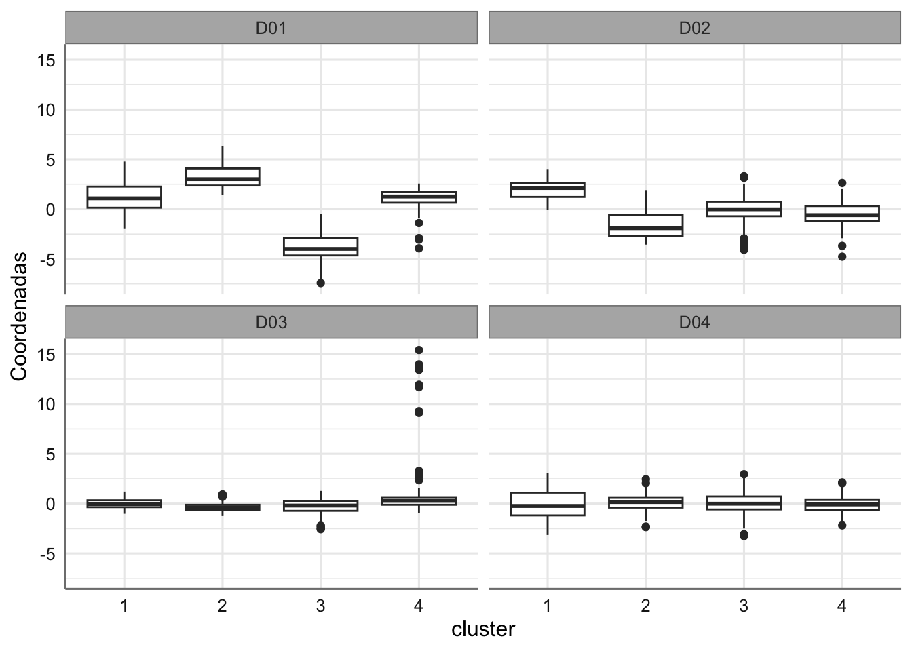
¿Cómo interpretamos ahora los gráficos anteriores? Para finalizar utilizamos las dos primeras componentes para la representación gráfica de los clusters y target.
# Añadimos el tipo de leucemia a las coordenadas y el cluster.
coor_cp$vehicle = y_vehicle
# Gráfico
ggplot(coor_cp, aes(D01, D02, color = cluster, shape = vehicle)) +
geom_point(size = 3) 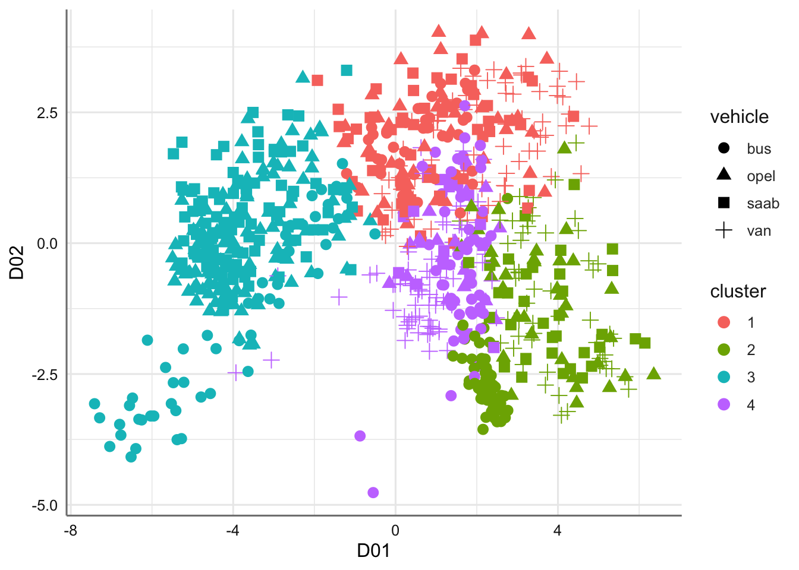
Aunque el gráfico de dispersión es capaz de separar los cuatro grupos (ese es el motivo por el que el índice es alto), también es cierto que la mezcla de tipos de vehículos es muy grande impidiendo una clasificación clara de todos ellos. tal vez si se aumenta el número de grupos podríamos tener una solución más efectiva. Vamos a ver que ocurre si consideramos 8 grupos en lugar de cuatro que parece una solución más adecuada para la obtención de clusters homogéneos.
# Modelo de aprendizaje
lrn1 = lrn("clust.hclust", method = "ward.D", distmethod = "euclidean", k = 8)
vehicle_lrn1 = as_learner(pp_vehicle %>>% lrn1)
# Valores de predicción
pr1 = vehicle_lrn1$train(tsk_vehicle)$predict(tsk_vehicle)
# Generamos la tabla de comparación
table(y_vehicle, pr1$partition)
y_vehicle 1 2 3 4 5 6 7 8
bus 22 1 36 2 22 53 20 62
opel 15 33 88 0 29 17 28 2
saab 16 32 83 0 37 19 27 3
van 39 55 0 6 29 70 0 0El reparto sigue siendo similar lo que nos impedirá obtener una buena clasificación.
# Obtención de coordenadas
vehicle_cp = prcomp(X_vehicle, scale = TRUE)
coor_cp = as.data.frame(get_pca_ind(vehicle_cp)$coord[,1:4])
# Fusión de datos
coor_cp$cluster = as.factor(pr1$partition)
colnames(coor_cp)[1:4] = c("D01", "D02","D03","D04")
# Gráfico descriptivo de componentes
df = coor_cp %>% pivot_longer(cols = colnames(coor_cp[,1:(ncol(coor_cp)-1)]), names_to = "CP", values_to = "Coordenadas")
ggplot(df, aes(cluster, Coordenadas)) +
geom_boxplot() +
facet_wrap(vars(CP), nrow = 2)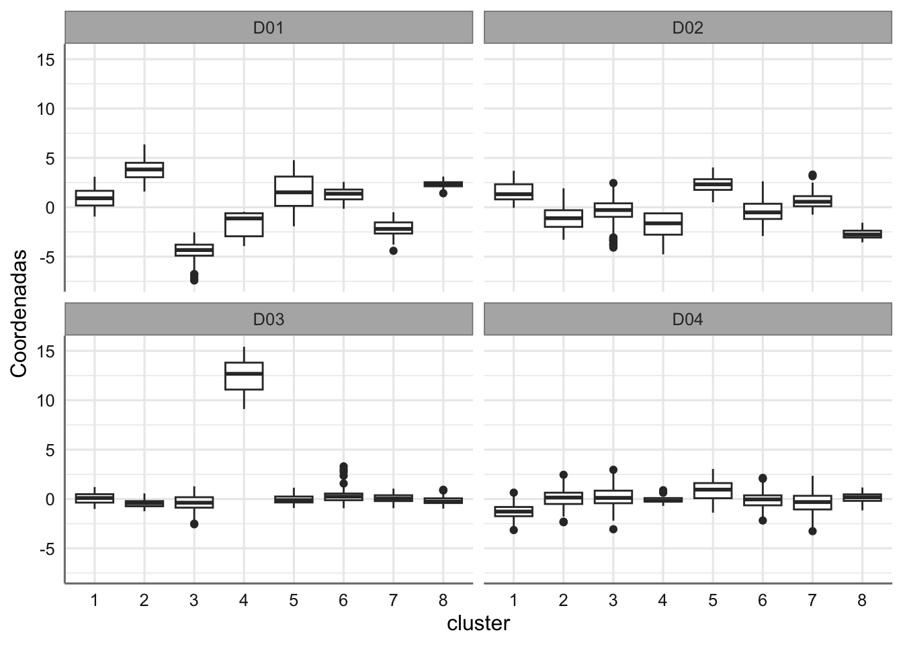
Al aumentar el número de clusters resulta más difícil extraer conclusiones sobre las características de los grupos- Veamos el gráfico de dispersión.
# Añadimos el tipo de leucemia a las coordenadas y el cluster.
coor_cp$vehicle = y_vehicle
# Gráfico
ggplot(coor_cp, aes(D01, D02, color = cluster, shape = vehicle)) +
geom_point(size = 3) 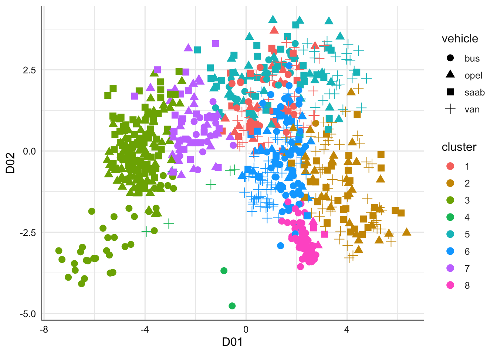
Aunque algunos grupos se identifican más claramente, también es cierto que en el cuadrante I hay una gran mezcla de subgrupos. Esta claro que el modelo de cluster no es capaz de clasificar adecuadamente este tipo de datos.
18.4.3.3 Sales
Ampliamos ahora el análisis del banco de datos Sales.
X_sales = sales %>% dplyr::select(-Product_Code)
# CP
sales_cp = prcomp(X_sales, scale = TRUE)
# Resumen numérico del análisis
resumen_cp = get_eigenvalue(sales_cp)
# Componentes para el 50% de VE
sum(resumen_cp$cumulative.variance.percent <= 50) + 1[1] 1[1] 1[1] 1Con la primera componente ya superamos el 80% de variabilidad explicada. Veamos toda la solución:
eigenvalue variance.percent cumulative.variance.percent
Dim.1 47.78910144 91.90211815 91.90212
Dim.2 0.55213123 1.06179082 92.96391
Dim.3 0.14797491 0.28456713 93.24848
Dim.4 0.13595480 0.26145153 93.50993
Dim.5 0.13219255 0.25421643 93.76414
Dim.6 0.13080692 0.25155177 94.01570
Dim.7 0.12715229 0.24452364 94.26022
Dim.8 0.12416468 0.23877824 94.49900
Dim.9 0.11564483 0.22239391 94.72139
Dim.10 0.11108205 0.21361932 94.93501
Dim.11 0.10604851 0.20393943 95.13895
Dim.12 0.10381895 0.19965183 95.33860
Dim.13 0.10118217 0.19458110 95.53318
Dim.14 0.09765755 0.18780299 95.72099
Dim.15 0.09366446 0.18012396 95.90111
Dim.16 0.09062670 0.17428211 96.07539
Dim.17 0.09004999 0.17317305 96.24857
Dim.18 0.08702323 0.16735237 96.41592
Dim.19 0.08581850 0.16503558 96.58095
Dim.20 0.08313023 0.15986583 96.74082
Dim.21 0.08106007 0.15588475 96.89670
Dim.22 0.07692514 0.14793296 97.04464
Dim.23 0.07608205 0.14631163 97.19095
Dim.24 0.07418541 0.14266425 97.33361
Dim.25 0.07358190 0.14150365 97.47512
Dim.26 0.07174831 0.13797751 97.61309
Dim.27 0.06924151 0.13315674 97.74625
Dim.28 0.06717177 0.12917649 97.87543
Dim.29 0.06491290 0.12483251 98.00026
Dim.30 0.06293675 0.12103221 98.12129
Dim.31 0.06094855 0.11720874 98.23850
Dim.32 0.05962049 0.11465479 98.35316
Dim.33 0.05791753 0.11137986 98.46454
Dim.34 0.05652227 0.10869668 98.57323
Dim.35 0.05327825 0.10245817 98.67569
Dim.36 0.05087133 0.09782947 98.77352
Dim.37 0.05065133 0.09740639 98.87093
Dim.38 0.04912207 0.09446553 98.96539
Dim.39 0.04770308 0.09173669 99.05713
Dim.40 0.04626510 0.08897135 99.14610
Dim.41 0.04385967 0.08434552 99.23045
Dim.42 0.04285923 0.08242160 99.31287
Dim.43 0.04274532 0.08220255 99.39507
Dim.44 0.04171343 0.08021814 99.47529
Dim.45 0.04013695 0.07718644 99.55247
Dim.46 0.03864668 0.07432054 99.62679
Dim.47 0.03581958 0.06888381 99.69568
Dim.48 0.03556097 0.06838648 99.76406
Dim.49 0.03328233 0.06400448 99.82807
Dim.50 0.03219051 0.06190483 99.88997
Dim.51 0.03014952 0.05797985 99.94795
Dim.52 0.02706401 0.05204618 100.00000Con las dos primeras CP alcanzamos un 92% de variabilidad explicada y optamos por esta solución para proceder con el análisis cluster.
# Preprocesado
pp_sales =
po("pca", param_vals = list(center = TRUE, scale. = TRUE, rank. = 2))
# Modelo de aprendizaje
lrn1 = lrn("clust.hclust", method = "ward.D", distmethod = "euclidean")
sales_lrn1 = as_learner(pp_sales %>>% lrn1)
# Entrenamiento del modelo
sales_lrn1$train(tsk_sales)
# Valoración del modelo
pr1 = sales_lrn1$train(tsk_sales)$predict(tsk_sales)
# Valores de scores
pr1$score(msr("clust.silhouette"), task = tsk_sales)clust.silhouette
0.751676 El score ha mejorado teniendo en cuenta que hemos reducido a un análisis solo con dos predictoras. procedemos con el resto del análisis. Veamos el dendograma:
# Preprocesado
pp_sales =
po("pca", param_vals = list(center = TRUE, scale. = TRUE, rank. = 2))
# Modelo de aprendizaje
lrn1 = lrn("clust.hclust", method = "ward.D", distmethod = "euclidean")
sales_lrn1 = as_learner(pp_sales %>>% lrn1)
# Entrenamiento del modelo
sales_lrn1$train(tsk_sales)
# Dendograma
modelo = sales_lrn1$model$clust.hclust$model
plot(as.dendrogram(modelo))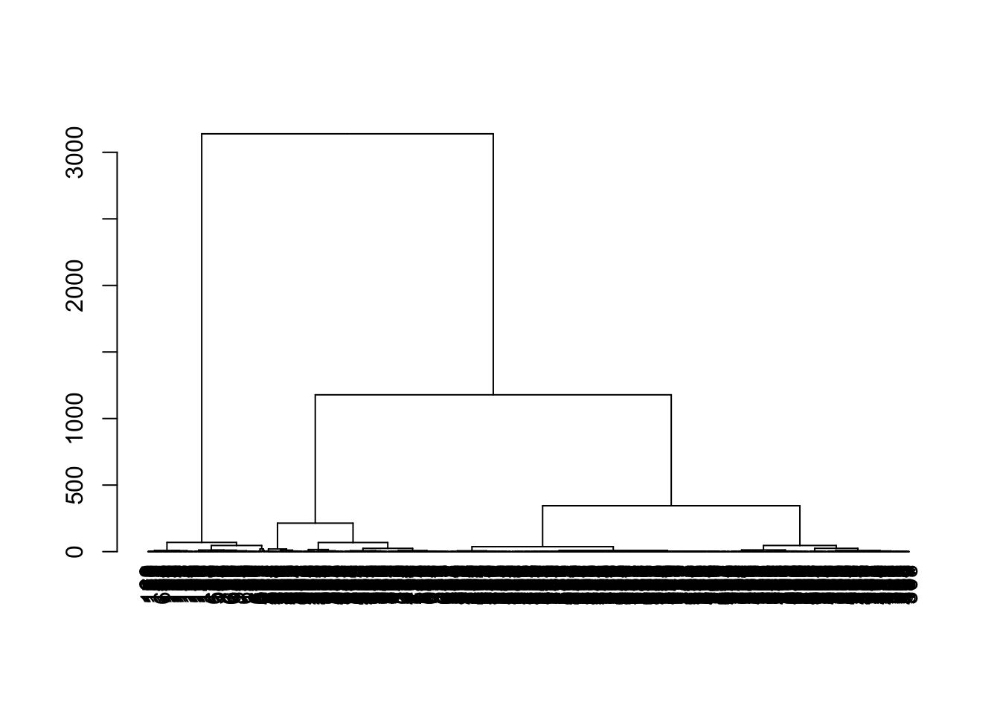
Una solución con cinco grupos parece construir grupos homogéneos y distintos entre si. Veamos con algo más detalle esta solución tratando de caracterizar los grupos obtenidos:
# Obtención de coordenadas
sales_cp = prcomp(X_sales, scale = TRUE)
coor_cp = as.data.frame(get_pca_ind(sales_cp)$coord[,1:2])
# Fusión de datos
coor_cp$cluster = as.factor(pr1$partition)
colnames(coor_cp)[1:2] = c("D01", "D02")
# Gráfico descriptivo de componentes
df = coor_cp %>% pivot_longer(cols = colnames(coor_cp[,1:(ncol(coor_cp)-1)]), names_to = "CP", values_to = "Coordenadas")
ggplot(df, aes(cluster, Coordenadas)) +
geom_boxplot() +
facet_wrap(vars(CP), nrow = 1)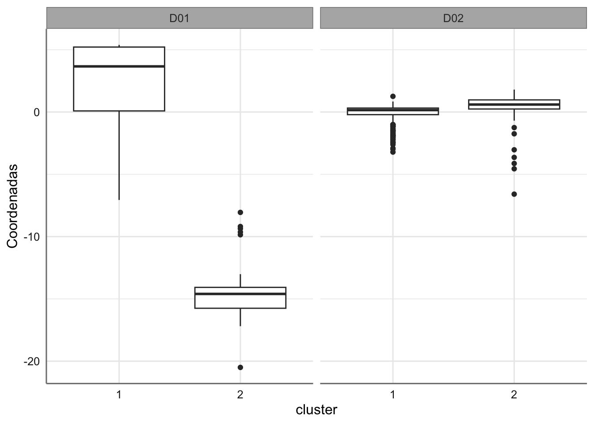
Como era de esperar casi toda la caracterización de los grupos se corresponde con la componente 1 ya que tenia más del 90% de variabilidad explicada. De acuerdo a ella nos resulta bastante fácil clasificar las diferentes semanas. El grupo 5 es que el que tiene los productos con mayores ventas y el grupo 4 el que tiene los productos con ventas más bajas. Veamos el gráfico de dispersión.
# Añadimos el tipo de leucemia a las coordenadas y el cluster.
coor_cp$product = y_sales$Product_Code
# Gráfico
ggplot(coor_cp, aes(D01, D02, color = cluster)) +
geom_point(size = 3) 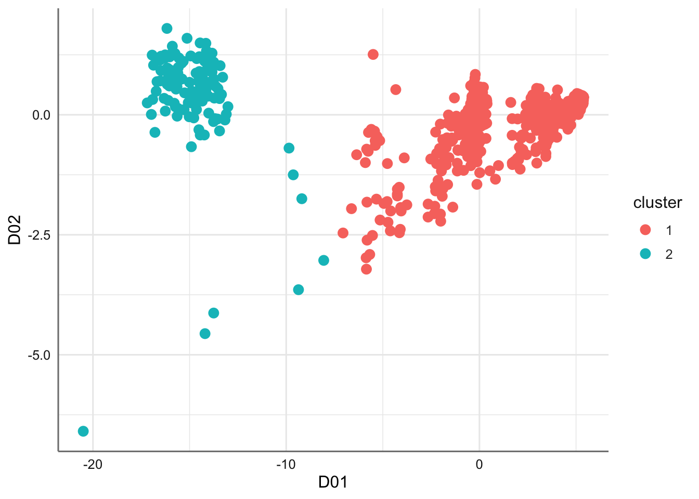
Podemos identificar claramente los clusters de izquierda a derecha (de menos a más ventas). Esto nos permite identificar rápidamente patrones de productos sin necesidad de revisar toda la tabla de datos. Podemos ver por ejemplo los productos que se corresponden con las menores ventas (grupo 4) y las mayores ventas (grupo 5).
18.5 Ejercicios
Consideramos diferentes ejercicios donde el target es categórico o numérico.
- Ajustar un modelo de aprendizaje automático basado en algoritmo de cluster (independiente o como resultado de un preprocesado de componentes principales) para el banco de datos
Iris4.3.3. - Ajustar un modelo de aprendizaje automático basado en algoritmo de cluster (independiente o como resultado de un preprocesado de componentes principales) para el banco de datos
Wine quality4.3.8. - Ajustar un modelo de aprendizaje automático basado en algoritmo de cluster (independiente o como resultado de un preprocesado de componentes principales) para el banco de datos
WGene expression breast cancer4.3.10. - Ajustar un modelo de aprendizaje automático basado en algoritmo de cluster (independiente o como resultado de un preprocesado de componentes principales) para el banco de datos
QSAR4.2.8. - Ajustar un modelo de aprendizaje automático basado en algoritmo de cluster (independiente o como resultado de un preprocesado de componentes principales) para el banco de datos
Meat spec4.2.5.